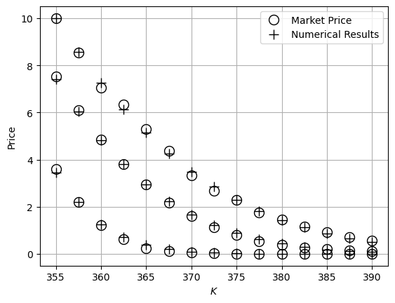
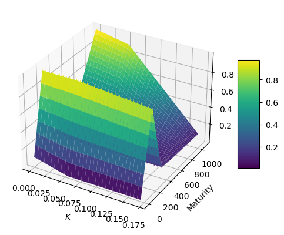

Test Dataset#
test dataset is corresponding with the test case as in the reference
pyvol can provide fast and efficient local volatility surface corresponding to the market prices.
[1]:
strikes = [355.0, 357.5, 360.0, 362.5, 365.0, 367.5, 370.0, 372.5, 375.0, 377.5, 380.0, 382.5, 385.0, 387.5, 390.0]
dt = 1/365.0
ttms = [6 * dt, 34 * dt, 62 * dt]
initial_price = 356.01
r = 0.0151
market_prices = [3.61, 2.20, 1.22, 0.62, 0.25, 0.11, 0.05, 0.02, 0.01, 0.01, 0.01, 0.01, 0.01, 0.01, 0.01,
7.52, 6.09, 4.85, 3.82, 2.95, 2.18, 1.60, 1.14, 0.79, 0.54, 0.39, 0.27, 0.21, 0.15, 0.12,
10.00, 8.55, 7.04, 6.35, 5.29, 4.37, 3.32, 2.68, 2.30, 1.74, 1.47, 1.16, 0.91, 0.72, 0.55]
from pyvol import LocalVolatilitySurface, option_type
span = 3
interval = 100
surface= LocalVolatilitySurface(initial_price, ttms, strikes, market_prices, option_type.call, dt, r, span, interval)
vol= surface.LocalVol()
numerical_value = surface.VanillaFD(vol)
[2]:
numerical_value
[2]:
array([3.44290703e+00, 2.19082390e+00, 1.25680889e+00, 7.16534725e-01,
3.94307282e-01, 1.93123020e-01, 9.12074273e-02, 4.68586704e-02,
2.07714983e-02, 8.20246644e-03, 4.03175472e-03, 1.69136417e-03,
6.19374697e-04, 2.62454850e-04, 1.08666359e-04, 7.43320716e+00,
6.05320355e+00, 4.82120926e+00, 3.79850418e+00, 2.95100898e+00,
2.22916597e+00, 1.64635302e+00, 1.21713303e+00, 8.68699592e-01,
5.95566016e-01, 4.16427482e-01, 2.80791431e-01, 1.80273358e-01,
1.16185878e-01, 7.43363708e-02, 1.00137332e+01, 8.58377498e+00,
7.27155252e+00, 6.12662009e+00, 5.12612041e+00, 4.23208572e+00,
3.45868122e+00, 2.82860012e+00, 2.27986259e+00, 1.80910436e+00,
1.44711424e+00, 1.14333488e+00, 8.88902827e-01, 6.92429229e-01,
5.39299264e-01])
Data Visualization#
Numerical Values vs Market Data#
[3]:
import matplotlib.pyplot as plt
import numpy as np
n_k = len(strikes)
n_t = len(ttms)
plot_strikes = np.zeros(n_t * n_k)
for k in range(n_t):
plot_strikes[n_k * k: n_k * (k + 1)] = strikes
plt.figure()
plt.plot(plot_strikes, market_prices, 'ko', linewidth=1, markersize=10, fillstyle = 'none')
plt.plot(plot_strikes, numerical_value, 'k+', linewidth=1, markersize=10)
plt.legend(['Market Price', 'Numerical Results'], loc='best')
plt.xlabel('$K$')
plt.ylabel('Price')
plt.grid(True)
plt.show()

Local Volatility Interpolator: Delaunay 2D Triangulation Interpolation#
[4]:
import pandas as pd
vol_data = surface.SurfaceData(vol)
prices = np.linspace(0, span*initial_price, span * interval + 1)
times = np.linspace(0, ttms[-1], int(round(ttms[-1]/dt)) + 1)
df = pd.DataFrame(vol_data.T, columns = prices, index = times)
df
[4]:
| 0.0000 | 3.5601 | 7.1202 | 10.6803 | 14.2404 | 17.8005 | 21.3606 | 24.9207 | 28.4808 | 32.0409 | ... | 1035.9891 | 1039.5492 | 1043.1093 | 1046.6694 | 1050.2295 | 1053.7896 | 1057.3497 | 1060.9098 | 1064.4699 | 1068.0300 | |
|---|---|---|---|---|---|---|---|---|---|---|---|---|---|---|---|---|---|---|---|---|---|
| 0.000000 | 0.100000 | 0.116336 | 0.077228 | 0.026000 | 0.068000 | 0.100191 | 0.178161 | 0.030995 | 0.035333 | 0.077333 | ... | 0.173330 | 0.730000 | 0.173295 | 0.477515 | 0.306411 | 0.135307 | 0.982000 | 0.227330 | 0.439492 | 0.268388 |
| 0.002740 | 0.100014 | 0.117540 | 0.074010 | 0.026667 | 0.068667 | 0.100205 | 0.179365 | 0.027778 | 0.036000 | 0.078000 | ... | 0.170614 | 0.748000 | 0.156073 | 0.474799 | 0.303695 | 0.132591 | 1.000000 | 0.234700 | 0.436776 | 0.265672 |
| 0.005479 | 0.100027 | 0.118745 | 0.070792 | 0.027333 | 0.069333 | 0.100218 | 0.180569 | 0.024560 | 0.036667 | 0.078667 | ... | 0.167898 | 0.766000 | 0.138851 | 0.472083 | 0.300979 | 0.129875 | 0.982778 | 0.242070 | 0.434060 | 0.262956 |
| 0.008219 | 0.100041 | 0.119949 | 0.067574 | 0.028000 | 0.070000 | 0.100232 | 0.181774 | 0.021342 | 0.037333 | 0.079333 | ... | 0.165183 | 0.784000 | 0.136106 | 0.469368 | 0.298263 | 0.127159 | 0.965556 | 0.249440 | 0.431344 | 0.260240 |
| 0.010959 | 0.100055 | 0.121153 | 0.064357 | 0.028667 | 0.070667 | 0.100245 | 0.182978 | 0.018124 | 0.038000 | 0.080000 | ... | 0.162467 | 0.802000 | 0.141550 | 0.466652 | 0.295548 | 0.124443 | 0.948333 | 0.256810 | 0.428628 | 0.257524 |
| ... | ... | ... | ... | ... | ... | ... | ... | ... | ... | ... | ... | ... | ... | ... | ... | ... | ... | ... | ... | ... | ... |
| 0.158904 | 0.110315 | 0.093317 | 0.022667 | 0.064667 | 0.100123 | 0.172140 | 0.047085 | 0.032000 | 0.074000 | 0.100314 | ... | 0.640000 | 0.259406 | 0.491095 | 0.319991 | 0.148887 | 0.892000 | 0.190480 | 0.453072 | 0.281968 | 0.110864 |
| 0.161644 | 0.111520 | 0.090099 | 0.023333 | 0.065333 | 0.100136 | 0.173344 | 0.043867 | 0.032667 | 0.074667 | 0.100327 | ... | 0.658000 | 0.242184 | 0.488379 | 0.317275 | 0.146171 | 0.910000 | 0.197850 | 0.450356 | 0.279252 | 0.108148 |
| 0.164384 | 0.112724 | 0.086881 | 0.024000 | 0.066000 | 0.100150 | 0.174548 | 0.040649 | 0.033333 | 0.075333 | 0.100341 | ... | 0.676000 | 0.224962 | 0.485663 | 0.314559 | 0.143455 | 0.928000 | 0.205220 | 0.447640 | 0.276536 | 0.105432 |
| 0.167123 | 0.113928 | 0.083664 | 0.024667 | 0.066667 | 0.100164 | 0.175753 | 0.037431 | 0.034000 | 0.076000 | 0.100355 | ... | 0.694000 | 0.207740 | 0.482947 | 0.311843 | 0.140739 | 0.946000 | 0.212590 | 0.444924 | 0.273820 | 0.102716 |
| 0.169863 | 0.115132 | 0.080446 | 0.025333 | 0.067333 | 0.100177 | 0.176957 | 0.034213 | 0.034667 | 0.076667 | 0.100368 | ... | 0.712000 | 0.190517 | 0.480231 | 0.309127 | 0.138023 | 0.964000 | 0.219960 | 0.442208 | 0.271104 | 0.100000 |
63 rows × 301 columns
[13]:
x, y = np.meshgrid(df.columns.astype(float),
df.index.astype(float))
fig = plt.figure()
ax = fig.add_subplot(111, projection = '3d')
surf = ax.plot_surface(x, y, df.values, cmap = 'viridis')
ax.set_xlabel("$K$")
ax.set_ylabel('Maturity')
ax.set_zlabel('$\sigma$')
fig.colorbar(surf, shrink=0.5, aspect=5, ax = ax)
plt.show()
